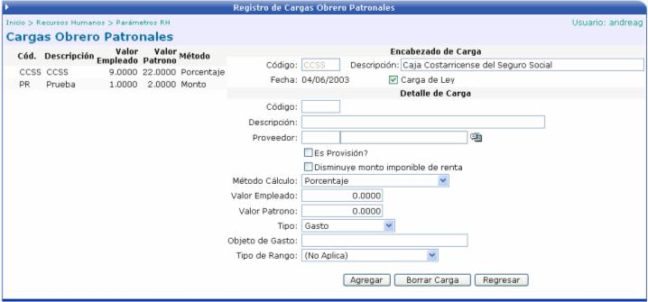

Las cargas obrero – patronales son aquellos rebajos de salario que son compartidos entre el empleado y el patrono. Existen cargas que son de Ley y otras no. Por ejemplo una carga de Ley es la que se paga al Seguro Social y una carga que no es de Ley es la de la Asociación Solidarista de la empresa.
En la siguiente pantalla se crea el encabezado de la carga, donde se debe de digitar un código y una descripción. Además si la carga es de Ley se debe de activar el check.
Una vez que se agrega el encabezado de la carga, se debe de insertar el detalle de la misma:

En el detalle se debe de crear un código y una descripción para identificar ese detalle. Además se debe se seleccionar a un proveedor, seleccionar si es provisión o si disminuye el monto imponible de renta.
El Método del Cálculo puede ser un porcentaje o un monto y en los campos valor empleado y valor patrono, se debe de poner el importe correspondiente de cada uno de ellos.
El Tipo puede ser Gasto o una Cuenta por Cobrar. Si es una CXC, se debe especificar el cliente.
Además se debe de determinar cual será el objeto de gasto, para que cuando se realicen los movimientos contables de la nómina, saber cual es la cuenta que se va a ver afectada.